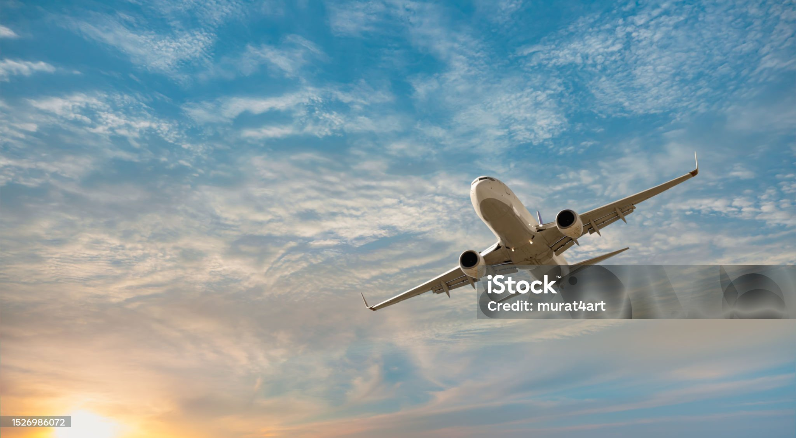

Upcoming travel ticket booking 📅
Don't miss any of your journey travel ticket booking
Travel is the time I use to read and listen to music. This also gives me
the time to reflect deeply on my life’s goals and where I am right now.
It is an ideal opportunity to break free from a routine lifestyle.
I feel very much relaxed during my travel and enjoy seeing new scenes and landscapes.
It gives me time to discover more about myself. For example, when I was in Los Angeles,
I saw a rock music performance at a club where everyone danced. I had not danced earlier at clubs.
But when I joined the fun, I was surprised to realize that I enjoyed the experience a lot.
Travel also gives me a sense of being free and independent. It makes my mind open to new
experiences all the time. Even during a flight, I get to taste new food, hear a new language,
see new ways of dressing and listen to new kinds of music. This is very exciting and I thoroughly enjoy my life during these moments.

Photo Gallery
Pay Entry fees | Free Food | Pets are not Allowed
One of my passions is travelling. Travel involves visiting new places and meeting new
people and having varied experiences. I come originally from Romania and have travelled
to UK and US. I remember the quote by Samuel Johnson: “All travel has its advantages.
If the passenger visits better countries, he may learn to improve his own. And if fortune
carries him to worse, he may learn to enjoy it”. I have had the luck of visiting better
countries and I believe my travel experiences have taught me a lot about human life and helped me expand the way I see things.

Pay Entry fees | Free Food | Pets are not Allowed
It was very exciting and adventurous. I learnt to enjoy these new experiences,
to become part of these varied cultures by taking their food, wearing their dresses, etc.
This has created in me the awareness that people all over the world are basically the same
but they are different in the cultures – have different ways of talking, singing, enjoying, dancing, writing,
building, dressing and conducting business. I have acquired a more global perspective of the world we live in.
My knowledge has thus expanded because of my travel.
Contact number
+91 9003892505 | saranmass79@gmail.com
12th,Ramnagar,omalur,salem-12